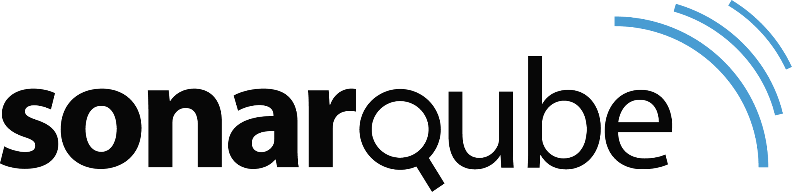

Tecnologías conocidas
Linux
Python
GitHub
GitLab
GitHub Actions
Jenkins

SonarQube
JFrog Artifactory
Docker
Kubernetes
Helm3
Terraform
Microsoft Azure
Soy una persona proactiva, con disposición constante para aprender y afrontar nuevos desafíos. Actualmente los proyectos por los que tengo mayor predilección son los emergentes y donde todo está por construir. Estoy enfocado en la automatización y optimización de procesos, con un especial interés en las herramientas y tecnologías relacionadas con la filosofía DevOps y los entornos en la nube.
Linux
Python
GitHub
GitLab
GitHub Actions
Jenkins
SonarQube
JFrog Artifactory
Docker
Kubernetes
Helm3
Terraform
Microsoft Azure
DevOps Engineer (Jul. 2022 - Actualmente)
Durante los primeros meses, mientras me familiarizaba con los conceptos de la filosofía DevOps, fui asumiendo un papel más activo en el equipo. Participé en la resolución de incidencias, impartí formaciones para los equipos de desarrollo sobre los procesos y servicios que ofrecíamos, y colaboré en el diseño de soluciones orientadas a satisfacer los requerimientos del cliente.Junior DevOps Engineer (Oct. 2021 - Jun. 2022)
Mi primera experiencia profesional a tiempo completo.Prácticas en Monitorización de Sistemas (Jun. 2021 - Ago. 2021)
Después de la primera etapa, cambié de proyecto para ver otras áreas relacionadas con las TI, donde aprendí algunas nociones relacionadas con la monitorización de sistemas desarrollando scripts en Python para la extracción y formateo de datos, y usando de manera básica la herramienta Dynatrace.Prácticas de Desarrollo de Software (Feb. 2021 - May. 2021)
En la primera de las dos etapas de prácticas que realicé en Inetum, empecé a asimilar conceptos relacionados con la computación en la nube a través de Microsoft Azure y servicios como SharePoint (desarrollo de sitios y contenidos), Power Apps (desarrollo de aplicaciones móviles), Power Automate (automatización de procesos) o Power BI (generación de informes).Prácticas de Desarrollo Web (Mar. 2017 - Jun. 2017)
Durante esta etapa de prácticas me dediqué a aprender y participar en el desarrollo de la aplicación web PONSGO, programada en PHP y, en menor medida, JavaScript, y la gestión de su base de datos (MySQL).Ingeniería Informática (2017-2021)
Grado universitario en la Universidad Politécnica de Madrid (UPM).Administración de Sistemas Informáticos en Red (2015-2017)
Formación Profesional de Grado Superior en el Colegio Salesianos Atocha.